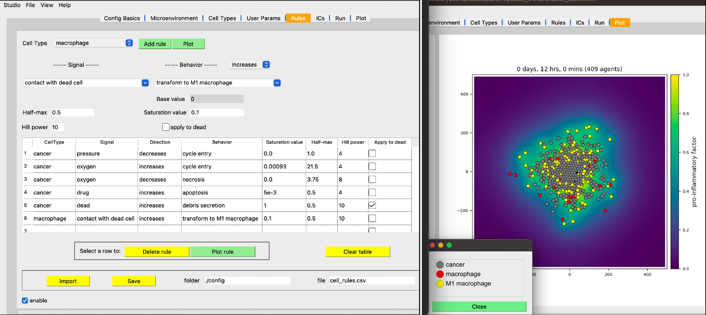

PhysiCell Studio
We created a graphical user interface to provide greater accessibility for PhysiCell modelers.

https://github.com/PhysiCell-Tools/PhysiCell-Studio/
https://github.com/PhysiCell-Tools/Studio-Guide/blob/main/README.md